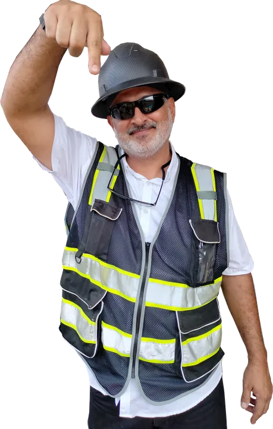
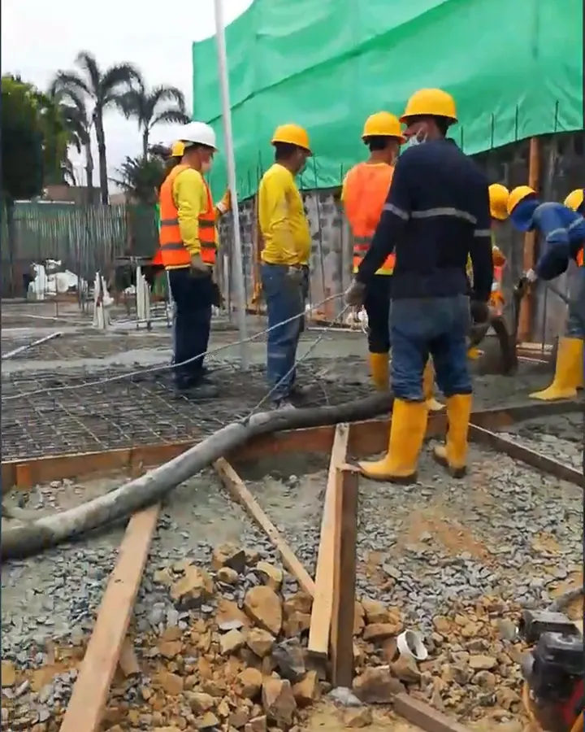

Regularización de construcciones en Guayaquil: pasos y plazos

Si ampliaste tu casa, levantaste un piso más o abriste un negocio sin el permiso correspondiente, el Municipio de Guayaquil tiene un proceso para ponerte en regla. Te explicamos quién lo necesita, cómo se hace y por qué no conviene dejarlo para después.

¿Quién necesita regularizar?
- Quien construyó o amplió sin registro de construcción.
- Quien tiene una obra que nunca pasó la inspección final.
- Quien usa el predio para algo distinto a lo registrado, por ejemplo un negocio en la casa.
¿Por qué hacerlo?
Una construcción que no consta en el catastro complica vender, heredar o hipotecar la propiedad, y te expone a multas. Regularizar hace que lo que existe en la realidad coincida con lo que tiene registrado el Municipio.
Plazos de la ordenanza
La reforma aprobada en junio de 2025 extendió hasta el 30 de junio de 2026 el plazo para regularizar edificaciones levantadas hasta el 3 de agosto de 2022, de hasta tres pisos y un máximo de 400 m².
En junio de 2026 el Concejo Municipal aprobó en primer debate una sexta reforma que extendería el plazo hasta el 30 de junio de 2027 y eliminaría las restricciones de superficie. Antes de iniciar, confirma si esa reforma ya está vigente: nosotros lo verificamos en cada caso.
Los pasos, en línea
- Crear la cuenta municipal (usuario y contraseña) en el portal del Municipio de Guayaquil. Te explico cómo en el video de abajo.
- Entrar a Servicios en línea → Trámites de edificaciones → Solicitud de regularización.
- Elegir el tipo: edificación, uso de suelo o ambas.
- Adjuntar los requisitos: datos del predio, certificado del Registro de la Propiedad y el levantamiento de lo construido firmado por un arquitecto o ingeniero.
- Dar seguimiento hasta la aprobación y la actualización catastral.
▶ Cómo crear usuario y contraseña en el Municipio de Guayaquil — canal Arquitecto Gratis
Más trámites municipales explicados en mi curso gratis:
▶ Lista: Curso de permisos municipales para la construcción en Guayaquil · 36 videos — ver en YouTube
Dónde ayuda un profesional
La parte técnica es el levantamiento: medir lo que está construido, dibujarlo y firmarlo como responsable. Si las medidas no coinciden con la realidad, el trámite se observa. Nosotros hacemos el levantamiento, preparamos los planos de lo existente, ingresamos la solicitud y damos seguimiento hasta el final.

¿Tu construcción no está en regla?
Escríbenos con la dirección o código catastral y te decimos si califica y qué necesitas.

Arquitecto en Guayaquil, Samborondón y Daule. Más de 360 mil personas siguen sus videos de obra como "Arquitecto Gratis".